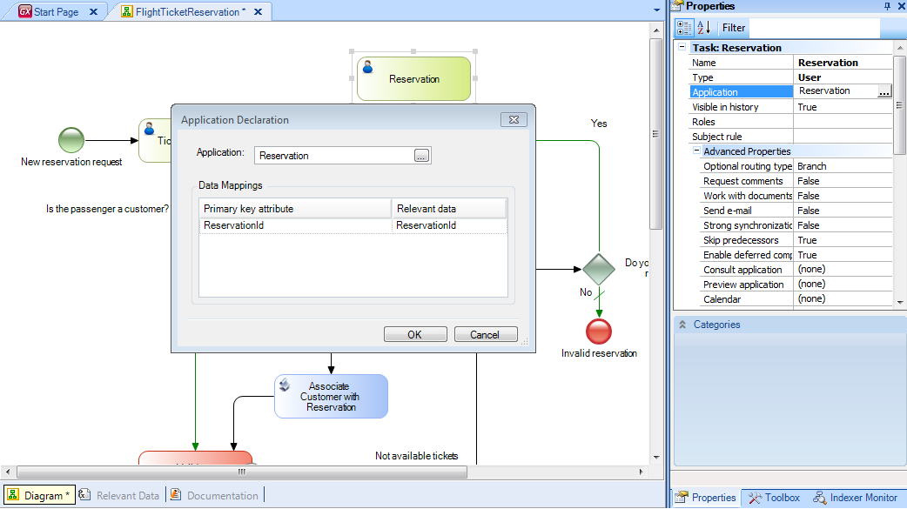
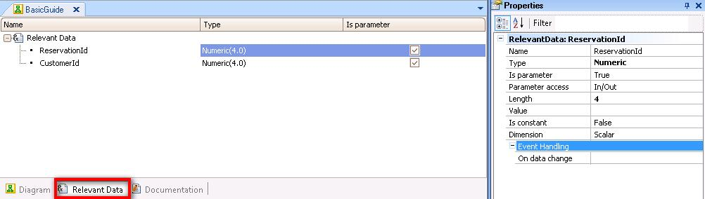
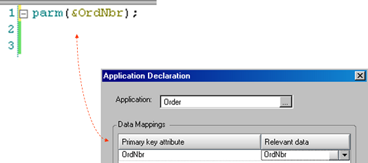
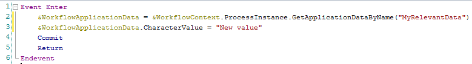
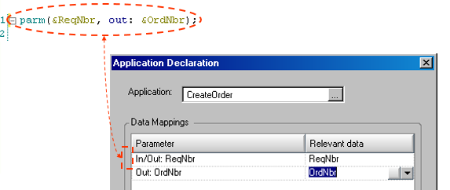

GeneXus performs an automatic mapping of atributes or variables, upon the GeneXus object associated to a business process diagram symbol. For example, by associating a transaction to an interactive task, GeneXus automatically creates relevant data with the same name as the transaction’s identifier attribute.  This relevant data will have the same name and type as the transaction’s primary key. If the primary key includes more than one attribute then relevant data will be created for each attribute that is part of the primary key. In the Relevant Data tab of the business process diagram object, we can see the relevant data defined.  This data appears under the ampersand symbol to indicate that it consists of variables. When we refer to the relevant data ReservationId we always do it by using the ampersand symbol as prefix in order to set it apart from the ReservationId attribute, as well as in the case of variables in GeneXus objects.
Automatic management of relevant Data in TransactionsWhen transactions receive the primary key in the transaction by parameter, directly in the attribute or in variables based on the primary key, there is also an automatic mapping with the relevant data. It is required that the variables must have the same name as the primary key attributes. For example, if we drag a transaction object to the diagram, one thing we have to bear in mind, is whether is has a Parm rule defined where the value of the primary key is received in a variable. The dragging of the transaction to the diagram creates the relevant data, but if the names of variables in the Parm rule match those of the attributes in the primary key, there will be a mapping between the relevant data and the variables, so that when the transaction is executed, the variables take the values stored in the relevant data at the time. The mapping is at the input, and at the ouput of the object execution. This means:

Automatic management of relevant Data in WebpanelsIn the case of association of a task with webpanel object, if the webpanel has a Parm rule and the variables or attributes in Parm rule have the same name of the diagram relevant data, there will be an automatic mapping of relevant data. In the case of variables, the values of variables are assigned automatically. This mapping is just for values at the entry point of the webpanel. Values are not updated at the end of webpanel execution, when the flow is turning back to the diagram. If the variable values changed, the relevant data update should be done manuallym using Workflow API methods, like in the following example: 
Automatic management of relevant Data in ProceduresIn the case of association of a task with procedure object, If variables or attributes in parm rule match the mapping of relevant data, the values of variables are automatically assigned. The mapping is both at the entry point of the procedure and at the end of procedure execution. This implies that when procedure is called, the value stored in the relevant data will be copied to the variable in the Parm rule. And when the flow returns to the diagram, if the value was modified in the procedure execution, the value will be updated into his corresponding relevant data. 
|
| Backlinks |
| Toc:GeneXus BPM Suite |